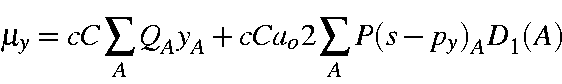
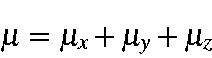
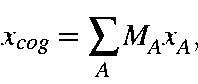

Where c = speed of light, C = charge on the electron, and ao = Bohr radius, or cC = 2.99792458*1.60217733 = 4.8032066, and cCa02 = 2.99792458*1.60217733 = 4.8032066*0.529177249*2.0 = 5.0834948.. D1(A) is defined elsewhere.
Formally, the dipole moment for an ion is undefined; however, it is convenient to set up a 'working definition.' Consider a heteronuclear diatomic ion in a uniform electric field. The ion will accelerate. To compensate for this, it is convenient to consider the ion in an accelerating frame of reference. The ion will experience a torque which acts about the center of mass, in a manner similar to that of a polar molecule. This allows us to define the dipole of an ion as the dipole the system would exhibit while accelerating in a uniform electric field. To formalize this definition:



and ycog and zcog have similar definitions. This general expression will work for all discrete species, charged and uncharged, and is rotation and position invariant.